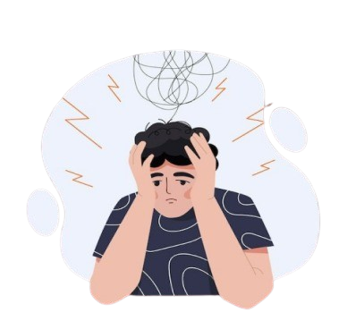
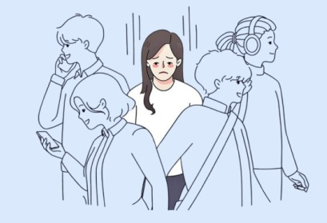

SafeNest
Temukan Wawasan untuk Perlindungan
Dapatkan beragam artikel edukatif seputar kesehatan mental, dukungan emosional, dan tips perlindungan diri. Didesain untuk membantumu memahami, menerima, dan bertumbuh dengan pengetahuan yang tepat di waktu yang tepat.
Baca Artikel Lainnya

Depresi, Kecemasan, Trauma, Umum
EMDR: Lebih dari Sekadar Terapi untuk Trauma
By Tim HatiPlong | March 25, 2024
Baca selengkapnya

Depresi, Kecemasan, Pustaka, Trauma, Umum
EMDR: Memproses Emosi dan Trauma untuk Hidup Lebih Baik
By Tim HatiPlong | March 25, 2024
Baca selengkapnya